Экзамен по информатике в 2026 году — это компьютерный ЕГЭ (КЕГЭ): 27 заданий с кратким ответом, 29 первичных баллов (максимум — 100 вторичных). Время работы — 3 часа 55 минут. Задания 1–25 оцениваются по 1 баллу; №26 и №27 — по 2 балла (возможен частичный балл).
По уровню сложности: 11 базовых (№1–11), 11 повышенных (№12–22), 5 высокого уровня (№23–27). Для выполнения части заданий нужны редактор таблиц, текстовый редактор и среда Python (мы готовились именно на нём).
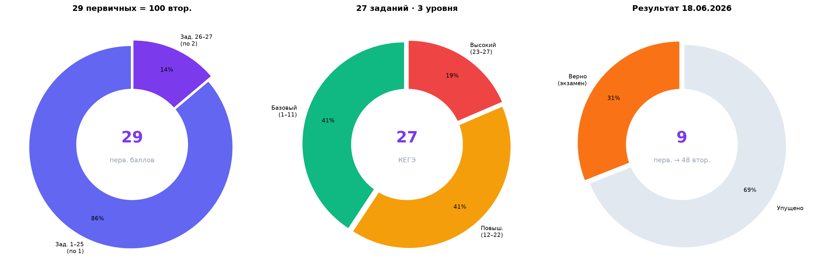
| Перв. | Втор. | % | Оценка |
|---|---|---|---|
| 5 | 34 | 34% | 3 |
| 7 | 43 | 43% | 3 |
| 9 | 48 | 48% | 3 |
| 12 | 56 | 56% | 4 |
| 17 | 70 | 70% | 5 |
| 25 | 90 | 90% | 5 |
| 29 | 100 | 100% | 5 |
| Уровень | Задания | Баллы | Тематика |
|---|---|---|---|
| Базовый | №1–11 | 11 | Модели, логика, таблицы, кодирование |
| Повышенный | №12–22 | 11 | Алгоритмы, Python, SQL, файлы |
| Высокий | №23–27 | 7 | Оптимизация, строки, анализ данных |
| Итого | 27 | 29 | КЕГЭ · Python |
Вячеслав пришёл с нулевыми знаниями программирования. Школьная информатика давала лишь поверхностное знакомство с теорией; написать рабочий код на Python, отладить программу под задачу ЕГЭ — не умел вовсе. Перед тем как переходить к номерам КИМ, необходимо было с нуля освоить основы Python и только затем подключать ЕГЭ-шные прототипы.
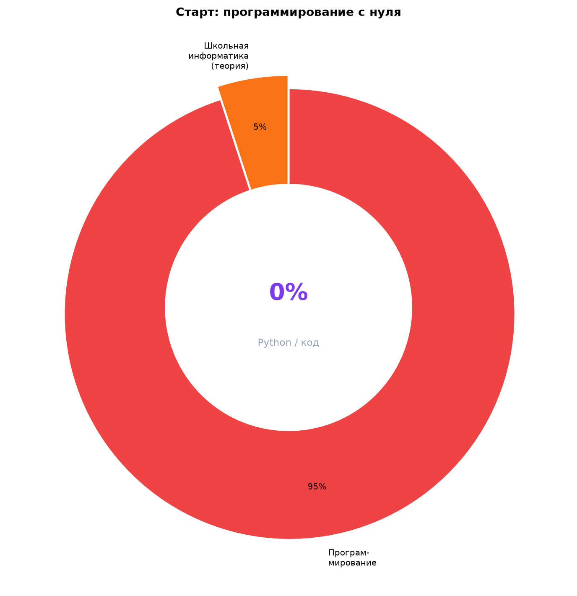
Именно поэтому первым этапом стала не «натренировка номеров», а авторский курс Python с теорией и практикой, максимально приближённой к задачам ЕГЭ — см. следующий раздел.
Был разработан индивидуальный курс: от переменных и циклов — к строкам, файлам, рекурсии, работе с таблицами и SQL. Каждый модуль сопровождался задачами, близкими к прототипам ФИПИ. Параллельно мы вместе со Славой собирали авторские шаблоны кода — не «готовые ответы», а каркасы, которые ученик адаптирует под конкретное условие.
Шаблоны корректируются под каждого ученика — у Славы был свой набор, сохранённый на его компьютере, чтобы он пользовался ими в домашней работе и постепенно переходил от «подстановки по образцу» к творческому подходу к решению.
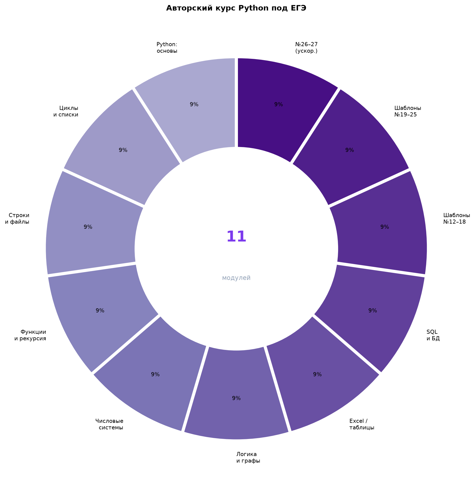
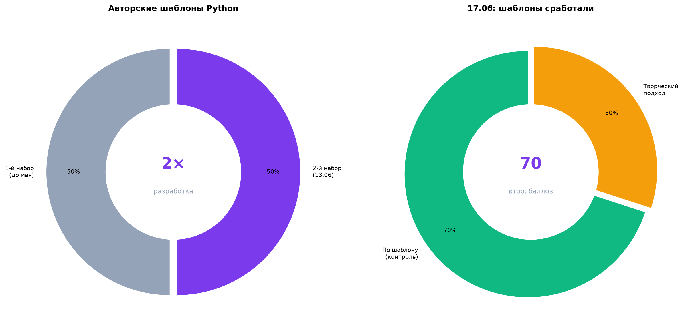
| Модуль | Содержание | Связь с ЕГЭ | Шаблоны |
|---|---|---|---|
| 1–2 | Python: переменные, условия, циклы, списки | Основа для №12–25 | ✓ Базовый каркас |
| 3–4 | Строки, файлы, функции, рекурсия | №18–22, №26 | ✓ По типам задач |
| 5–6 | Числовые системы, логика, графы | №1–8, №14–15 | ✓ Теория + примеры |
| 7–8 | Excel/ODS, SQL, базы данных | №3, №9, №17, №22 | ✓ Пошаговые схемы |
| 9–11 | ЕГЭ-прототипы по номерам, ускоренный блок | №12–27 | ✓ 2 набора (см. ниже) |
Разработан совместно в ходе основного курса. Сохранён на ПК Славы для самостоятельной отработки и постепенного «отвязывания» от заготовки.
После перезапуска подготовки — ускоренная версия с упором на быстрое восстановление навыка. Выслан за 5 дней до экзамена для заучивания и оперативного вливания в программирование.
В мае из‑за технических неполадок компьютера была утеряна вся накопленная база знаний — шаблоны, конспекты, домашние наработки, которые копились несколько месяцев. Восстановить архив полностью не удалось.
Одновременно стало ясно, что основной упор нужно сделать на математику и физику (экзамены 8 и 11 июня). Информатика в последний месяц не проводилась. Сам Вячеслав признался: по памяти ему трудно было восстановить пройденный материал, особенно после сдачи других экзаменов — фактически мы приступили к информатике снова с нуля, уже после физики.
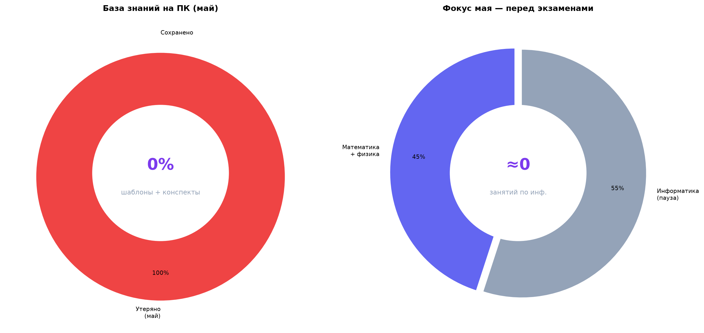
После экзамена по физики (11 июня) начался финальный рывок по информатике. 12 июня — контроль знаний: 18 вторичных баллов (≈3 первичных). Это показало, насколько «обнулился» уровень после паузы, и было принято решение интенсивно пройти всё возможное за менее чем неделю до экзамена 18 июня.
После месяцев работы (до паузы) и пробника на 70 вторичных контроль 12 июня показал 18 вторичных — уровень «2». Это не «неучёба», а следствие паузы, потери материалов и отсутствия практики программирования в мае.
Контроль 12 июня — 18 вторичных. Экзамен 18 июня — 48 вторичных. За 6 дней интенсива удалось поднять результат на +30 баллов и сдать КЕГЭ на «3» — при нулевом старте по программированию и потере всей базы в мае.
13 июня Славе были высланы новые шаблоны с упором на ускоренное изучение — их нужно было выучить и снова «влиться» в код за считанные дни.
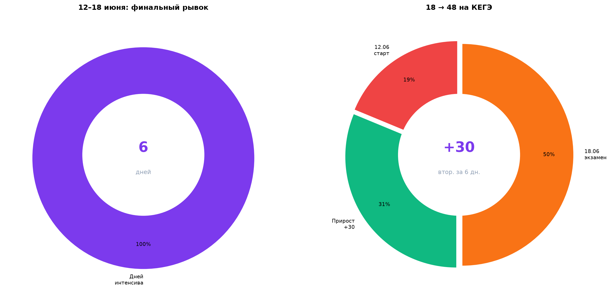
Единственный «длинный» пробник до паузы — 24 апреля: 70 вторичных (17 первичных). После перезапуска — контраст: 18 → 70 → 48 вторичных. Главное: с точки отсчёта 12 июня до экзамена — +30 баллов за 6 дней (18 → 48).
Несмотря на паузу в мае, потерю шаблонов, низкую мотивацию и сжатые сроки — удалось дотянуть с 18 до 48 вторичных баллов на реальном КЕГЭ. Это +30 баллов за 6 календарных дней — от контроля 12.06 до экзамена 18.06. Оценка на экзамене — «3», экзамен сдан.
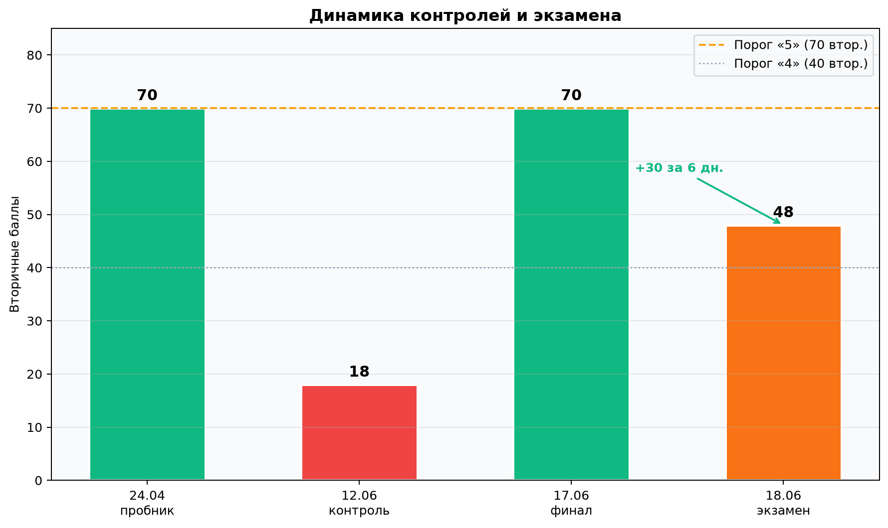
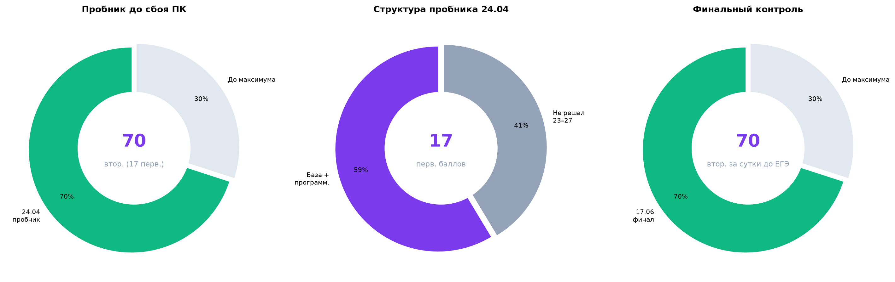
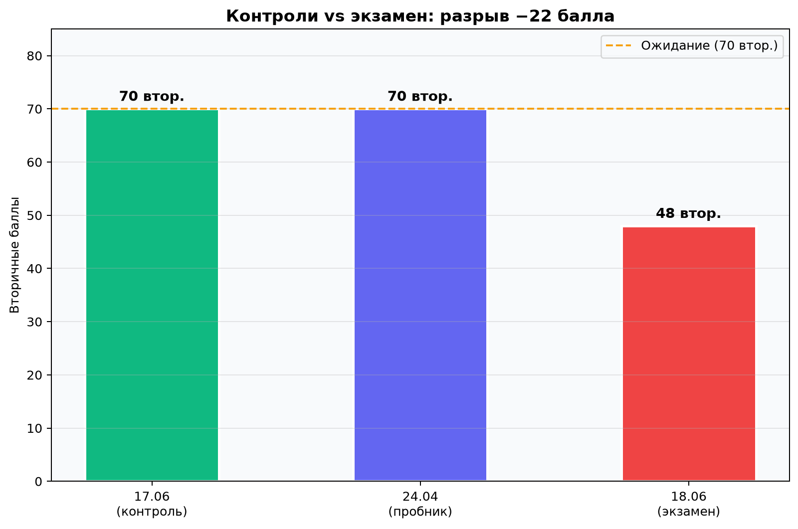
| Дата | Тип | Перв. | Втор. | % | Оценка | Комментарий |
|---|---|---|---|---|---|---|
| 24.04.2026 | Пробник | 17 | 70 | 70% | 5 | До сбоя ПК; шаблоны 1-й волны |
| 12.06.2026 | Контроль | ≈3 | 18 | 18% | 2 | После перезапуска с нуля |
| 17.06.2026 | Финальный контроль | 17 | 70 | 70% | 5 | За 5 дней интенсива — полное восстановление |
| 18.06.2026 | Экзамен КЕГЭ | 9 | 48 | 48% | 3 | +30 втор. за 6 дн. (от 12.06) |
Утром в день экзамена были разобраны абсолютно все задачи, которые Вячеслав показывал накануне (контроль 17 июня). Под каждый тип — шаблоны конкретно на эти задания. Совпадение основной волны с вариантом Дальнего Востока составило 91% — показатель, которого не наблюдалось с 2023 года.
Задачи, которые он решал накануне на 70 баллов, с высокой вероятностью повторились на КЕГЭ в той же или близкой формулировке. Утренний разбор давал готовые идеи и код — объективных причин «не знать, с чего начать» не было.
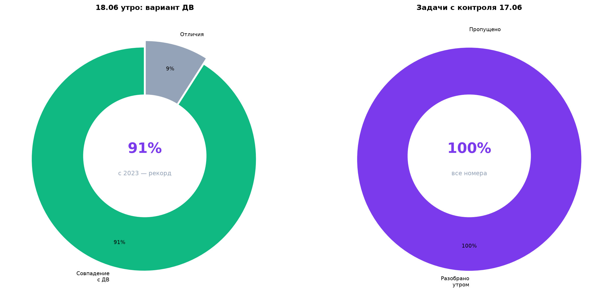
9 первичных · оценка «3»
17 первичных · за сутки до КЕГЭ
18 втор. (12.06) → 48 на КЕГЭ
По официальной шкале ЕГЭ-2026 по информатике: 9 первичных = 48 вторичных — оценка «3», экзамен сдан. Относительно контроля 12 июня (18 вторичных) — прирост +30 баллов за 6 дней. Относительно финального контроля 17.06 (70) — на 22 балла ниже; это отдельный разговор про экзаменационное поведение на КЕГЭ.
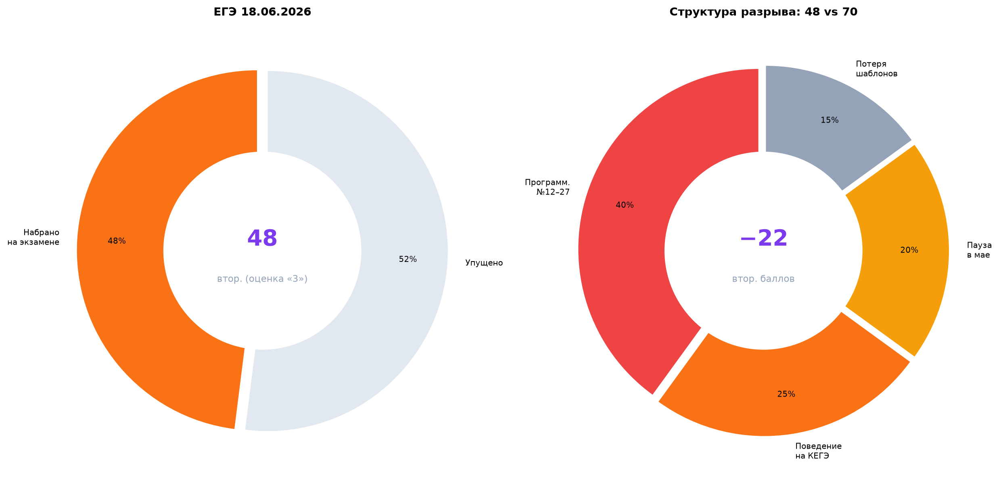
На экзамене набрано 9 первичных из 29 — верно 9 заданий из 27. Основная масса баллов потеряна в блоке программирования №12–27: именно туда уходит основной объём подготовки по Python, и именно там на КЕГЭ произошёл обвал относительно контроля 17.06 (17 первичных).
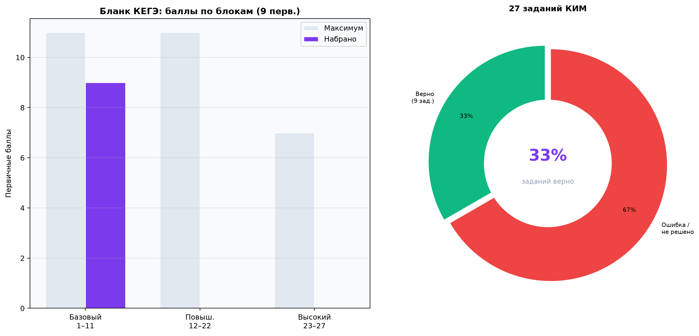
| Блок | Задания | Макс. перв. | На экзамене | Потеря | Комментарий |
|---|---|---|---|---|---|
| Базовый | №1–11 | 11 | 9 | 2 | №1–8, №10 верны; ошибки в №9 и №11 |
| Повышенный | №12–22 | 11 | 0 | 11 | Python, SQL, файлы — полный провал на КЕГЭ |
| Высокий | №23–27 | 7 | 0 | 7 | №23–27 не решены (0 из 7 перв.) |
| Итого | 27 | 29 | 9 | 20 | 48 втор. · оценка «3» |
Ниже — разбор по номерам на основе официального результата 9 первичных баллов и сопоставления с контролем 17.06. Задания, решённые верно на экзамене, отмечены зелёным; ошибки и пропуски — красным.
| № | Тема (КИМ 2026) | Балл | Экзамен | 17.06 | Комментарий |
|---|---|---|---|---|---|
| 1 | Анализ информационных моделей | 1 | ✓ | ✓ | Базовая теория |
| 2 | Логика, таблицы истинности | 1 | ✓ | ✓ | Отрабатывалось на курсе |
| 3 | Электронные таблицы | 1 | ✓ | ✓ | Шаблон по ODS |
| 4 | Кодирование информации | 1 | ✓ | ✓ | |
| 5 | Графы, маршруты | 1 | ✓ | ✓ | |
| 6 | Анализ алгоритма | 1 | ✓ | ✓ | |
| 7 | Кодирование, декодирование | 1 | ✓ | ✓ | |
| 8 | IP-адреса, маски | 1 | ✓ | ✓ | |
| 9 | Электронные таблицы (файл .ods) | 1 | ✗ | ✓ | Был на контроле; на КЕГЭ — ошибка |
| 10 | Текстовый редактор | 1 | ✓ | ✓ | |
| 11 | Объём информации | 1 | ✗ | ✓ | Теория — сбой на экзамене |
| 12 | Алгоритм для исполнителя | 1 | ✗ | ✓ | Python-блок |
| 13 | Сеть, IP-адреса | 1 | ✗ | ✓ | |
| 14 | Числовые системы, Python | 1 | ✗ | ✓ | Был на контроле — на КЕГЭ ошибка |
| 15 | Алгоритм, ветвления | 1 | ✗ | ✓ | Шаблон был на контроле |
| 16 | Рекурсия, алгоритмы | 1 | ✗ | ✓ | |
| 17 | Базы данных, SQL | 1 | ✗ | ✓ | Разбиралось 17.06 |
| 18 | Программирование, файлы | 1 | ✗ | ✓ | Ключевой шаблон Python |
| 19 | Программирование | 1 | ✗ | ✓ | |
| 20 | Программирование | 1 | ✗ | ✓ | |
| 21 | Программирование | 1 | ✗ | ✓ | |
| 22 | Таблицы + программирование | 1 | ✗ | ✓ | |
| 23 | Сложные алгоритмы | 1 | ✗ | ~ | «Гробовое» на ДВ — не решено |
| 24 | Программирование | 1 | ✗ | ~ | |
| 25 | Программирование | 1 | ✗ | ~ | |
| 26 | Обработка строк | 2 | 0 | ~ | 0 из 2 перв. |
| 27 | Анализ данных / Python | 2 | 0 | ~ | 0 из 2 перв. |
| Итого | 29 | 9 | 17 | −8 перв. за сутки |
✓ / ✗ — результат на КЕГЭ 18.06. Колонка «17.06» — финальный контроль накануне. «~» — частично или нестабильно на контроле.
Базовый блок №1–8, №10 — теория, таблицы, кодирование без длинного кода. Все 9 первичных — из номеров 1–11.
№9, 11–13, 15–27 — всё, что на контроле 17.06 решалось, но на КЕГЭ «не дошло» до верного ответа. Ядро — Python №15–22.
За сутки до экзамена Слава набирал 17 первичных (70 вторичных) — в том числе программирование. На КЕГЭ блок №12–22 дал 0 баллов — ни одного верного ответа, хотя накануне эти номера решались. Это не «не проходили» — это не перенесли на экзамен то, что уже работало на контроле.
Разрыв между контролем 17.06 (70) и экзаменом (48) объясняется сочетанием факторов: низкая мотивация к последнему экзамену, несобранная подготовка на фоне интенсива, неполное выполнение домашней работы (объём был большим, срок — менее недели) и последствия майской паузы (нет устойчивого навыка «держать» код под стрессом).
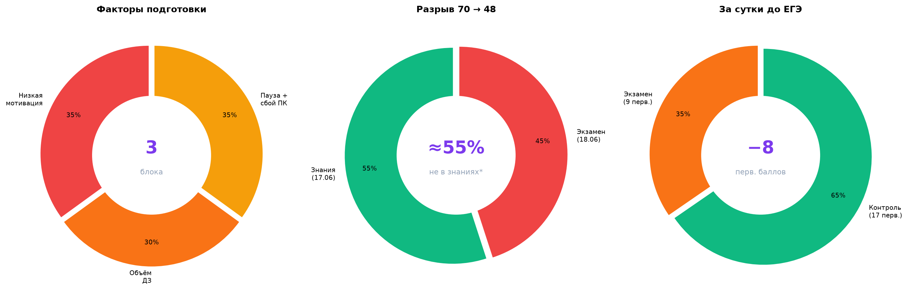
Со стороны Славы не наблюдалось желания сдавать информатику собранно и уверенно — хоть это и был последний экзамен. Вопрос «зачем вообще сдавать» звучал открыто.
ДЗ выполнялось не в заданном объёме — на этом фоне начались разногласия. Я признаю: объём был большим, но и срок до экзамена — менее недели.
Я написал маме Светлане, чтобы она проконтролировала работу Славы в финальные дни — без внешнего контроля интенсив не вытягивался бы в полном объёме.
Интенсив за 6 дней поднял результат с 18 (контроль 12.06) до 48 на КЕГЭ — +30 вторичных баллов. На контроле 17.06 было 70 — шаблоны работают. Разрыв 70 → 48 на экзамене — следствие экзаменационного поведения, но сам факт 18 → 48 за неделю доказывает: подготовка с нуля по Python в сжатые сроки даёт реальный, измеримый результат.
| Показатель | Первичные | Вторичные | % | Оценка |
|---|---|---|---|---|
| Старт (программирование) | — | — | 0% | — |
| Пробник 24.04 | 17 | 70 | 70% | 5 |
| Контроль 12.06 | ≈3 | 18 | 18% | 2 |
| Контроль 17.06 | 17 | 70 | 70% | 5 |
| Экзамен 18.06 | 9 | 48 | 48% | 3 |
Вячеслав пришёл по информатике с нулём в программировании. Мы построили авторский курс Python под ЕГЭ, разработали два набора шаблонов и к апрелю вышли на пробник 70 баллов. Май перечеркнул месяцы работы: сбой компьютера, потеря материалов, пауза в занятиях и приоритет математики с физикой.
После физики оставалось менее недели. Контроль 12 июня показал 18 баллов — и был организован жёсткий интенсив: новые шаблоны 13 июня, финальный контроль 17 июня — снова 70 баллов. Утром 18 июня разобрали вариант Дальнего Востока с 91% совпадением — редчайший случай для информатики.
На КЕГЭ — 48 баллов (9 первичных). Несмотря на все обстоятельства — паузу, сбой ПК, низкую мотивацию, сжатые сроки — за 6 дней удалось поднять результат с 18 до 48 вторичных (+30) и сдать экзамен на «3». Аудит показывает: базовый блок удержан (№1–8, №10), а провал №12–27 на КЕГЭ при 17 первичных накануне — типичный разрыв «контроль vs экзамен».
0 старт Python · 18 → 48 (+30 за 6 дн.) · 70 контроль 17.06 · 91% ДВ · 2× шаблоны